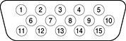

The eMac computer has a port for an external video monitor. The external monitor shows the same information as the built-in display, a mode sometimes called hardware video mirroring. The external monitor supports only the display resolutions that are available on the internal monitor, as shown in Table 3-5.
The connector for the analog video monitor is a three-row DB15 connector (DB9/15, also called mini sub D15) for use with a VGA, SVGA, or XGA monitor. An adapter for a standard two-row VGA connector is sold separately. Figure 3-3 shows the pin configuration and Table 3-6 lists the signals and pin assignments.
Figure 3-3 Video connector
